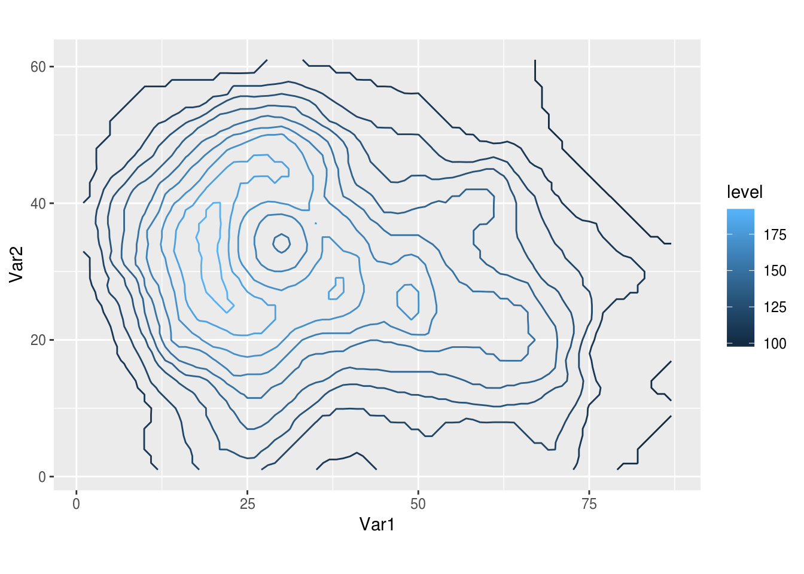
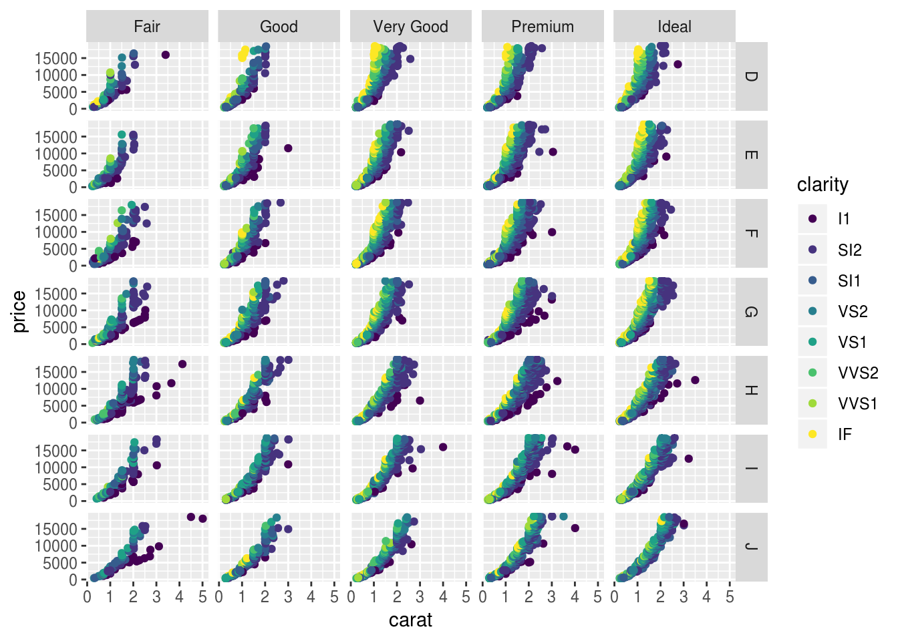
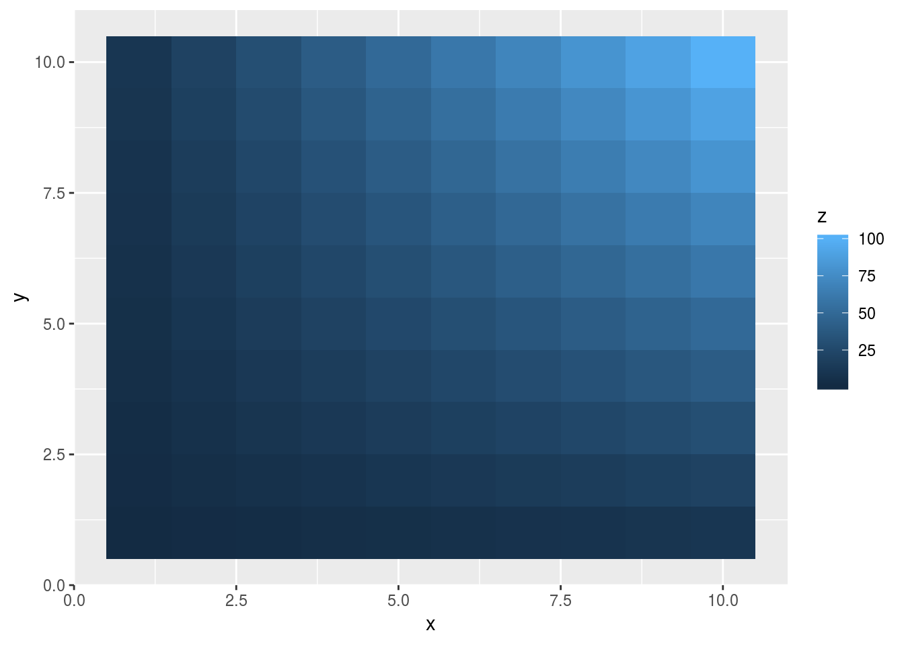
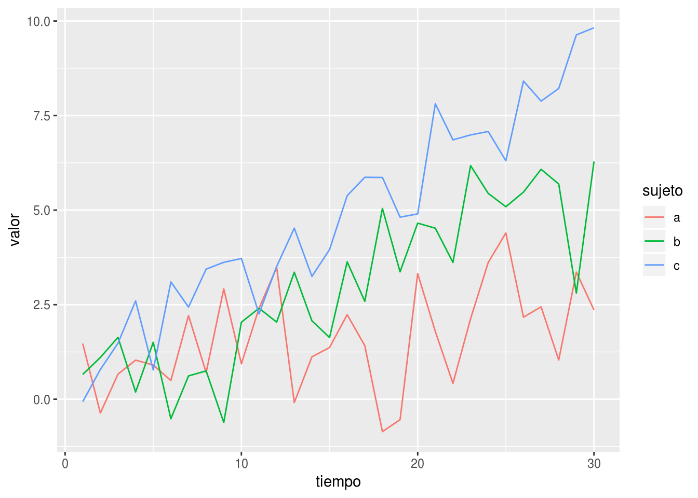

Cómo hacer un buen ejemplo reproducible en R
Es muy difícil dar ayuda si no se sabe cuál es el problema. Un buen ejemplo de lo que está mal que cualquiera pueda correr en sus computadoras es casi esencial para recibir ayuda.
Un buen ejemplo reproducible (o reprex) es básicamente el feliz matrimonio entre un set de datos mínimo y un código mínimo que ilustre el problema y que cualquiera pueda copiar, pegar en un script y obtener exactamente los mismos resultados.
Obtener un reprex mínimo no es una tarea trivial. A veces puede tomar más de media hora y dar maś de un dolor de cabeza. Pero en el proceso uno aprende mucho sobre las características específicas de su problema y a veces incluso termina por resolverlo solo. Aún si no se resuelve, el tiempo que uno invierte en hacer el ejemplo reproducible implican más chances de que algún usuario responda, más rápido y con más claridad.
Datos mínimos
Hay dos formas principales de obtener sets de datos para ejemplos reproducibles, creándolos uno mismo o usando datos que vienen en distintos paquetes. La cantidad de sets de datos a los que cualquier usuario de R puede tener acceso sin salir de casa es inmensa. Distintos datos sirven para ilustrar distintos problemas.
Por ejemplo, yo trabajo mucho con datos espaciales en grillas regulares y si quiero probar algo uso mucho el dataset volcano, que tiene información topográfica del volcán Maunga Whau en Auckland con una resolución de 10m. Como es una matriz y en general prefiero trabajar con data.frames, para usarla tengo que usar reshape2::melt()
library(ggplot2)
ggplot(reshape2::melt(volcano), aes(Var1, Var2)) +
geom_contour(aes(z = value, color = ..level..)) +
coord_equal()
Para datos más puntales, ggplot2 tiene el dataset diamonds que contiene más de 50.000 filas de datos numéricos y factores
ggplot(diamonds, aes(carat, price)) +
geom_point(aes(color = clarity)) +
facet_grid(color ~ cut)
Y para el que prefiera autos de lujo a anillos de diamantes, está mtcars.
Si uno prefiere usar datos ficticios, siempre puede generar números aleatorios con rnorm, runif, rgamma o cualquier otra distribución (ver ?distributions para una lista). Siempre que uno use alguna de estas funciones tiene que setear la semilla del generador de números aleatorios con set.seed(). De esta forma uno se asegura que todo aquel que ejecute el código obtenga exactamente los mismos números (pero aleatorios 🤔).
Una función que a mí me resolvió muchísimos problemas es expand.grid. Devuelve un data.frame con todas las combinaciones de los elementos de distintos vectores. Es una función muy flexible que puede ser usada para generar una grilla regular
df <- expand.grid(x = 1:10, y = 1:10)
df$z <- with(df, x*y)
ggplot(df, aes(x, y)) +
geom_tile(aes(fill = z))
o para asignar valores a distintos factores
library(ggplot2)
df <- expand.grid(tiempo = 1:30, sujeto = factor(letters[1:3]))
set.seed(42)
df$valor <- with(df, tiempo*0.1*as.numeric(sujeto) + rnorm(nrow(df)))
ggplot(df, aes(tiempo, valor, color = sujeto)) +
geom_line()
A veces los problemas dependen de los datos utilizados. Si resulta imposible reproducir un problema con datos públicos o artificiales, la última opción es compartir los datos propios. En ese caso, lo que uno debe hacer es minimizar los datos para que puedan ser compartidos fácilmente. Por ejemplo, yo estaba teniendo unos problemas con unos datos de función corriente para distintos modelos climáticos y distintas estaciones. Parte de resolverlo implicó reducirlo a sólo un campo.
Si los datos reducidos quedan bastante chicos, la manera más fácil de compartirlos es con la función dput, que convierte un objeto de R en un código que lo reproduce:
dput(cars)## structure(list(speed = c(4, 4, 7, 7, 8, 9, 10, 10, 10, 11, 11,
## 12, 12, 12, 12, 13, 13, 13, 13, 14, 14, 14, 14, 15, 15, 15, 16,
## 16, 17, 17, 17, 18, 18, 18, 18, 19, 19, 19, 20, 20, 20, 20, 20,
## 22, 23, 24, 24, 24, 24, 25), dist = c(2, 10, 4, 22, 16, 10, 18,
## 26, 34, 17, 28, 14, 20, 24, 28, 26, 34, 34, 46, 26, 36, 60, 80,
## 20, 26, 54, 32, 40, 32, 40, 50, 42, 56, 76, 84, 36, 46, 68, 32,
## 48, 52, 56, 64, 66, 54, 70, 92, 93, 120, 85)), .Names = c("speed",
## "dist"), row.names = c(NA, -50L), class = "data.frame")Si aún reduciéndolo al mínimo los datos son demasiado grandes o complicados para compartirlos como texto, la mejor opción es guardarlo como un archivo .Rds
saveRDS(diamonds, file = "diamonds.Rds")y luego subir el archivo a algún sitio de intercambio.
En el código de ejemplo, leer los archivos con
diamonds <- readRDS("diamonds.Rds")Código mínimo
Una vez que se tiene la menor cantidad de datos que reproducen un problema, lo que sigue es minimizar el código. A veces puede ser complicado, pero a grandes rasgos son cuestiones obvias.
Cargar la menor cantidad de paquetes posibles. No crear variables innecesariamente. Si es una cuestión con gráficos, sacar la mayor cantidad de personalización posible (usar las escalas default en ggplot2, por ejemplo).
Personalmente, si el código original usa sintaxis de dplyr o data.table (mi favorita 💜), trato de reducir todo a R base. Casi seguro que el problema no está ahí y no está bueno obligar a otros a instalar paquetes nuevos para ayudar.
Todo esto requiere una intuición de dónde podría estar el error pero en caso de no tenerla, ayuda a desarrollarla. Ir sacando pedazos de código y chequeando si el problema continua es una buena forma de encontrar la causa del problema. Como dijo Sherlock:
Una vez descartado lo imposible, el código que queda, por improbable que parezca, debe ser la causa del error.
(o algo así)
Finalmente
Una vez que están los datos mínimos y el código mínimo, hay que compartir todo eso. Uno de mis paquetes favoritos y que uso constantemente es reprex. Es un paquete pensado especialmente para hacer desaparecer todas las dificultades de compartir código y es increíblemente fácil de usar.
Una vez que se tiene el código escrito, lo único que hay que hacer es copiarlo todo al portapapeles y correr reprex::reprex() para que lo corra y copie el resultado en el portapapeles. Si hay gráficos, los sube automáticamente a imgur y genera los tags correctos para que se vean bien. Muestra los mensajes de error que aparezcan y permite elegir distintas convenciones de código según si queremos compartir nuestro ejemplo en GitHub, StackOverflow o un script de R.
Por ejemplo, dándole el código anterior, reprex devuelve esto:
```r
library(ggplot2)
df <- expand.grid(tiempo = 1:30, sujeto = factor(letters[1:3]))
dfset.seed(42)
$valor <- with(df, tiempo*0.1*as.numeric(sujeto) + rnorm(nrow(df)))
ggplot(df, aes(tiempo, valor, color = sujeto)) +
geom_line()
```

Que está listo para pegar en GitHub y que salga todo perfecto.
Buen reprex mata galán
Pedir ayuda o reportar bugs con un buen ejemplo mínimo reproducible mejora la calidad de las consultas, ayuda a los que quieren ayudar, te hace ganar amigos y bajar 7 libras en 2 semanas. Sea bueno, haga un reprex.